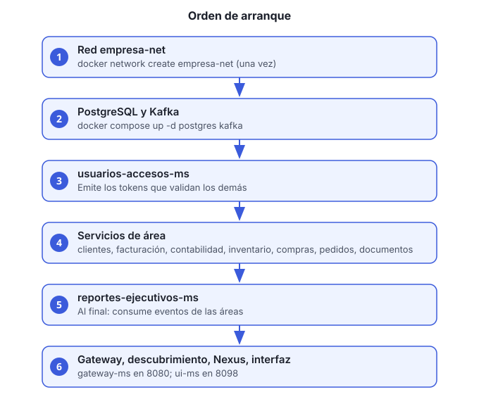

Objetivo: dejar arriba todos los servicios en el orden correcto y confirmar que responden.
Tiempo estimado: 15 a 25 minutos la primera vez (descarga de imágenes y compilación). Después, 3 a 5 minutos.

Antes de empezar
- Docker Desktop (o Docker Engine) abierto y con al menos 8 GB de memoria asignada.
- Repositorio clonado en tu máquina.
- Contraseñas y claves generadas con los comandos de la sección 3 del README de la raíz.
Pasos
Crea la red compartida. Es una sola vez por máquina:
docker network create empresa-netSi el comando responde que la red ya existe, sigue con el paso 2.
Prepara las variables de entorno. Copia las plantillas y completa los valores vacíos:
cp .env.example .env cp clientes-ms/.env.example clientes-ms/.envEn
.envcompleta al menosPOSTGRES_PASSWORD,CLIENTES_DB_PASSWORD,USUARIOS_JWT_CLAVE_PRIVADA,USUARIOS_ADMIN_INICIAL_CORREOyUSUARIOS_ADMIN_INICIAL_PASSWORD. La lista completa está en la sección 4 del README. Nunca subas el.enval repositorio.Levanta la infraestructura: PostgreSQL, Kafka y Redis. Redis guarda las sesiones de la interfaz; sin él, el inicio de sesión en
ui-msfalla.docker compose up -d postgres kafka redisEspera a que PostgreSQL y Kafka estén
healthy:docker compose ps postgres kafka redisLevanta usuarios-accesos-ms. Los demás servicios validan tokens con él, así que va primero:
docker compose up -d --build usuarios-accesos-msLevanta los servicios de área. Pueden arrancar en cualquier orden entre ellos:
docker compose up -d --build clientes-ms facturacion-pagos-ms contabilidad-ms inventario-operaciones-ms compras-proveedores-ms pedidos-ventas-ms documentos-cumplimiento-msLevanta reportes-ejecutivos-ms. Va al final porque consume eventos de las áreas:
docker compose up -d --build reportes-ejecutivos-msLevanta el gateway, el descubrimiento, Nexus y la interfaz. La interfaz (
ui-ms) tiene su propio archivo de Compose:docker compose up -d --build discovery-ms gateway-ms nexus-ms docker compose -f ui-ms/docker-compose.yml up -d --buildui-msno está en el Compose de la raíz. Si intentasdocker compose up ui-msdesde la raíz, Compose responde «no such service».Revisa el estado de todos los contenedores:
docker compose psTodos deben aparecer como
running. Si alguno está enrestartingoexited, revisa sus logs:docker compose logs --tail=100 NOMBRE_DEL_SERVICIO
Verificación
Entra a
http://localhost:8080(gateway). Debe responder aunque sea con un error de autenticación; eso confirma que el gateway está arriba.Inicia sesión con el administrador inicial:
curl -s -X POST http://localhost:8080/usuarios-accesos-ms/v1/auth/login \ -H "Content-Type: application/json" \ -d '{"correo":"TU_CORREO_ADMIN","password":"TU_CONTRASEÑA_ADMIN"}'La respuesta debe traer
accessToken. Si respondecambio-password-requerido, cambia la contraseña inicial conPOST /v1/auth/cambiar-password-inicial(ver la guía 5).Abre la interfaz en
http://localhost:8098.
Problemas comunes
| Síntoma | Causa probable | Qué hacer |
|---|---|---|
network empresa-net not found |
Falta el paso 1 | Ejecuta docker network create empresa-net |
| Un servicio se reinicia en bucle | Variable de entorno faltante | Revisa docker compose logs NOMBRE y completa el
.env |
| 404 en una ruta que sí existe | Hay dos contenedores del mismo servicio | Revisa con docker ps y elimina el duplicado |
| El gateway responde 401 en todo | usuarios-accesos-ms no está arriba |
Levántalo (paso 4) y vuelve a probar |
| La interfaz muestra la versión anterior | La imagen no se reconstruyó | Repite el paso 7 con --build |
Para más casos, consulta la sección 9 del README.